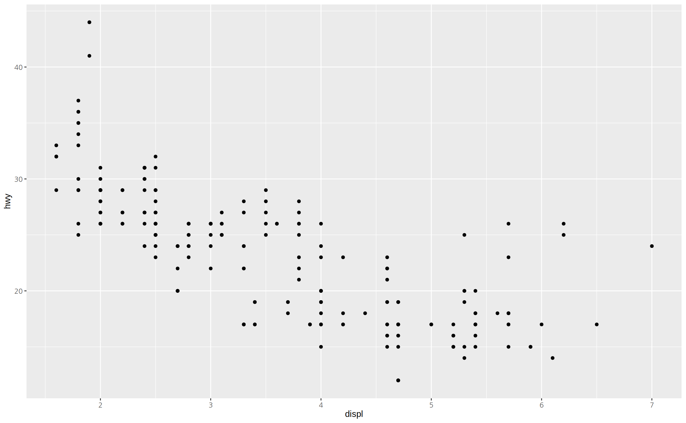
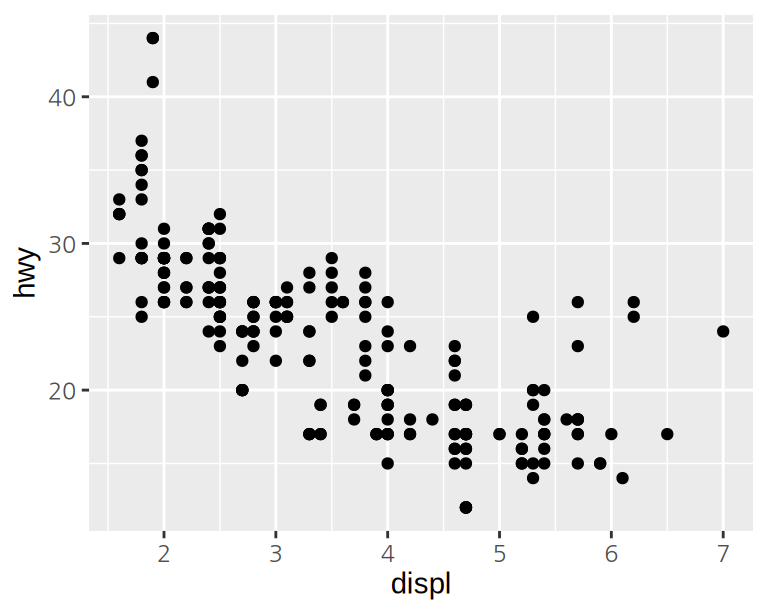
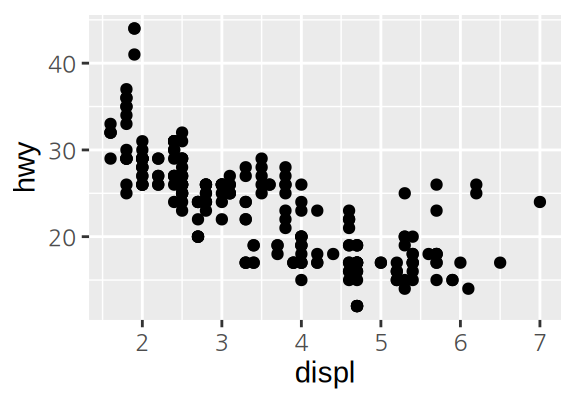

Chapter 13 R 동적 문서
매주 월요일마다 지난 주 판매 데이터를 분석하여 보고서를 작성한다고 가정해 보자. 이를 위해 다음과 같은 작업을 수행한다고 하자.
- 데이터베이스에서 주별 판매 데이터를 CSV 파일로 내려받는다.
- CSV 파일을 R에 적재하여 제품별 판매를 집계한다.
- R로 요일별 판매량에 대한 막대 그래프를 작성하여 보고서에 삽입한다.
- R로 판매 상위 20 개 품목의 판매량, 판매액에 대한 통계를 구하여 보고서에 표로 정리한다.
- 지난 주 판매에 대해 평가와 개선 방안을 텍스트로 간략히 작성한다.
이러한 문서 작업의 문제점은 다음과 같다.
- 매주 동일한 형식의 표와 그래프를 문서에 넣는 수작업을 반복하여야 한다.
- 보고서 작성이 수작업으로 이루어지다 보니 오류 발생 가능성이 크다. 표에 잘못된 수치를 기입할 수 있으며, 잘못된 그래프가 삽입될 수도 있다.
- 보고서 작성 후에 데이터에 오류가 발견되거나 변경되면, 문서 작업을 다시 해야 한다.
동적 문서(dynamic documents)를 사용하여 데이터 분석과 관련된 문서 작업을 효율화할 수 있다.
- 동적 문서에는 일반적인 문서 내용과 함께 프로그램 코드가 포함된다.
- 동적 문서를 컴파일하면 문서의 코드가 실행되어, 코드의 실행 결과가 표, 그래프, 텍스트 등의 형태로 문서에 자동으로 삽입된다.
그러므로 주별 판매 보고서도 데이터만 변경하면, 변경된 데이터에 대한 그래프와 표를 포함한 문서를 동적으로 생성할 수 있다.
또한 동적 문서는 코드와 코드의 실행 결과를 문서에 포함시킬 수 있으므로 데이터 분석 노트로서의 역할도 수행할 수 있다. 데이터 분석에서는 선행 분석 과정에서 얻은 중간 분석 결과를 바탕으로 후속 분석 방안이 도출되어 새로운 분석이 반복적으로 수행된다. 그런데 이러한 분석 과정이 R 콘솔이나 R 스크립트를 사용하여 수행되면, 중간 분석 결과를 문서화하기 어려워 추후에 왜 이러한 방식으로 데이터 분석이 수행되었는지 기억하기 어렵다. 별도의 문서에 중간 분석 결과를 기록할 수도 있겎지만, 분석에 사용된 R 명령어와 실행 결과, 실행 결과에 대한 해석 등이 별도로 생성되고 저장되므로 관리가 어렵다. 동적 문서를 사용하면 코드와 실행 결과, 실행 결과에 대한 해석, 후속 분석의 계획 등이 하나의 문서에 관리될 수 있다.
R에서 동적 문서를 만드는 방법은 두 가지이다.
- R Markdown: R에서
rmarkdown패키지를 설치한 후, R 코드와 마크다운으로 구성된 R Markdown 원본 문서를 생성하여, HTML, MS Word, PDF 문서와 각종 프리젠테이션 문서를 동적으로 생성한다.
- Quarto: R Markdown에서 얻은 아이디어와 경험을 R뿐 아니라 Julia, Python 등의 코드를 포함하는 동적 문서를 생성할 수 있도록 확장한 기술이다. R과 독립적으로 사용될 수 있다. 프로그램 코드와 마크다운으로 구성된 Quarto 문서를 생성하여 HTML, MS WOrd, PDF 문서와 각종 프리젠테이션 문서를 동적으로 생성한다.
R Markdown은 이미 성숙한 기술로서, 이 책도 R Markdown을 이용하여 작성되었다. 이미 R Markdown을 사용하고 있는 사용자라면 Quarto로 굳이 전환을 하지 않아도 된다. (R Markdown과 Quarto의 관계에 대해서는 With Quarto Coming, is R Markdown Going Away? No. 글을 참고하기 바란다.) 그러나 새롭게 동적 문서와 관련된 기술을 배우는 사용자라면 Quarto를 이용할 것을 추천한다. Quarto는 지금 계속 계발되고 있는 기술로서 새로운 요소들이 계속 추가되고 있고, R뿐 아니라 Python 등의 언어로도 동적 문서를 만들 수 있기 때문이다.15 그러므로 여기서는 Quarto를 사용하여 동적 문서를 만드는 방법을 설명한다.
13.1 Quarto 설치
Quarto는 다중 언어 플랫폼을 지향하는 독립적인 시스템이므로 R이나 RStudio와 무관하게 설치될 수 있다. 또한 RStudio뿐 아니라, VS Code, Jupyter, Neovim 등의 도구를 사용하여 Quarto 문서를 만들고 변환할 수 있다.
그러나 R 사용자라면 RStudio를 사용하여 Quarto를 설치하고 사용하는 것이 가장 편리하다. RStudio는 Quarto와 통합되어 있어서 별도의 설치 과정이 필요 없고 Quarto 문서를 가장 손쉽게 작성할 수 있는 편의기능을 제공하기 때문이다.
RStudio 이외에서 Quarto를 사용하려면 Quarto의 Get Started 페이지에서 자신의 시스템 환경에 맞는 설치파일을 다운로드 받아 설치하하고, 자신이 선택한 도구에서 Quarto를 사용하는 방법을 확인하기 바란다.
13.2 Quarto 문서 만들기
다음 절차에 따라 Quarto 문서를 만들어 보자.
RStudio에서
[File]-[New File]-[Quarto Document...]메뉴를 선택한다.New Quarto Document 윈도우가 팝업되면 필요한 정보를 입력하고
[Create Empty Document]를 클릭한다.
- Title에는 만들 문서의 제목을 입력한다. (문서에 표시될 전체 제목을 의미하는 것이지 문서 파일명이 아니다.)
- Author에는 작성자의 이름을 입력한다. 선택 사항이므로 입력하지 않아도 된다.
- Quarto 문서로 만들어낼 출력 문서의 형식을 지정한다. HTML, PDF, Word 문서를 지정할 수 있다. PDF 문서를 만드려면 LaTex가 설치되어 있어야 한다. 초심자에게 LaTex 설치는 까다로울 수 있다. 그러므로 HTML이나 Word 문서를 선택할 것을 권장한다.
- Engine: 문서의 코드를 실행하여 그 결과를 마크다운으로 변환할 때 사용할 엔진을 지정한다. R을 사용하는 문서는
Knitr을 선택한다. - Editor: Quarto 문서는 마크다운 문법으로 기술된다.
Use visual markdown editor가 체크되어 있으면 마크다운 문법을 모르더라도 워드나 한글 문서를 작성하듯이 Quarto 문서를 작성할 수 있다. 초심자는 이 항목이 체크되도록 한다. [Create]를 클릭하면 생성된 문서에 문서 작성 예가 포함된다. 예를 보고 싶은 독자는[Create]를 클릭해 보기 바란다. 여기서는[Create Empty Document]를 클릭하여 문서 작성 예가 포함되지 않은 빈문서를 생성한다.

문서를 생성하면 문서에 대한 메타정보를 표현하는 YAML 헤더(
---으로 둘러쌓인 부분)만 작성된 빈 Quarto 문서가 생성된다.YAML 헤더 아래에 문서 컨텐츠를 작성한다.
- Quarto 문서는 컨텐츠를 마크다운 요소로 표현한다.
Ctrl + /또는/키를 입력한다. 그러면 문서에 입력할 수 있는 마크다운 요소가 나타난다. 또는 문서 위의 메뉴를 사용하여 원하는 마크다운 요소를 입력할 수 있다.- 다음은 문서에 장 제목을 추가하기 위하여 Heading 1을 요소를 선택한 예이다.

문서에 텍스트를 표시하려면 텍스트를 그대로 입력하면 된다.
R 코드 입력하려면
Ctrl + Alt + I키 조합을 사용하거나 메뉴에서 Run 옆에 있는 +C라고 표현된 부분을 클릭한다.
- 그러면 다음처럼 R 코드를 입력하는 모듬(chunk)이 생성된다. 코드 모듬은 회색 부분으로 표시된다.
- 실행하고자 하는 R 코드를 모듬에 입력한다.
- 입력된 코드를 실행하려면 코드 모듬의 우상단의 실행 버튼을 클릭하거나
Ctrl + Shift + Enter키 조합을 사용한다. 그러면 실행 결과가 코드 모듬 아래에 표시된다.
문서에 필요한 컨텐츠와 코드 모듬을 추가한다.
문서 작성이 완료되었으면 문서 상단의 메뉴에서
[Render]를 클릭하거나Ctrl _ Shift + K키 조합으로 출력 문서로 변환(render)한다.
- Quarto 문서를 지금까지 저장하지 않았으면 저장할 파일명을 물어본다. 적절한 파일명으로 문서를 저장한다.
- 문서 변환에 필요한 패키지가 설치되어 있지 않으면 문서 상단에 필요 패키지를 설치하라는 노란색 경고 표시가 나타나고 변환에 실패한다. 이 경우에는 경고 표시에서
Install을 클릭하여 필요한 패키지를 설치한 다음에 다시 변환을 시도한다.
- 출력 문서로의 변환이 성공적이면 별도의 창이나 RStudio의 Viewer 탭에 출력 문서가 나타난다.
- 출력 문서를 별도의 창과 Viewer 중 어디로 출력할지는 문서 위의 메뉴의 설정 아이콘을 클릭하여 변경할 수 있다.
Priview in Window가 체크되어 있으면 별도의 창에Priview in Viewer가 선택되어 있으면 RStudio의 Viewer 탭에 변환된 문서가 나타난다.
13.3 Quarto의 출력 형식
Quarto 문서는 크게 다음 세 가지 요소로 구성된다.
- YAML 헤더: 문서의 메타정보를 저장한다. 주로 Quarto 문서가 어떤 방식으로 변환될지 설정하는 용도로 사용된다.
- 마크다운 요소: 텍스트, 표, 이미지 등 문서의 정적인 컨텐츠를 기술한다. 마크다운은 경량화된 마크업 언어이다. HTML에 비해 매우 간략한 문법만으로 문서의 서식을 지정할 수 있다.
- 코드 모듬: R, Julia, Python 언어 등으로 작성된 코드가 기술된다. 코드의 실행 결과가 동적으로 출력 문서에 포함된다.
R 코드를 포함한 Quarto 문서는 다음 과정을 거쳐 출력 문서로 변환된다.
knitr패키지는 새로운 R 세션에서 Quarto 문서에 포함된 R 코드 모듬을 순서대로 실행하여 그 결과를 마크다운 서식으로 변환한다. 이 과정을 거치면 Quarto 문서는 코드를 포함하지 않은 정적인 마크다운 문서로 변환된다.- Pandoc 프로그램은 마크다운 문서를 HTML, MS Word, PDF 문서 등으로 변환한다. Quarto 등의 동적 문서의 장점은 코드 실행 결과를 동적으로 문서에 포함시킬 수 있는 것뿐 아니라, 하나의 원본으로 여러 형식의 출력 문서를 생성할 수 있다는 것이다. Pandoc은 Quarto와는 독립적인 기술로서 마크다운을 매개로 다양한 형식의 문서를 상호변환한다.

Quarto는 HTML, MS Word, PDF뿐 아니라 프리젠테이션 형식을 포함한 다양한 형식으로 변환을 지원한다. Quarto가 지원하는 모든 출력 형식은 Quarto 사이트의 All Formats 페이지를 참조한다.
출력 형식 바꾸기
Quarto 문서의 출력 형식을 바꾸려면 YAML 헤더의 format의 값을 수정하거나 추가하면 된다.
(Quarto를 독립적으로 설치하며 명렬줄에서 변환 명령을 실행한는 경우에는 출력 형식에 대한 옵션을 지정하여 출력 문서의 형식을 변경할 수도 있다.)
다음은 13.2 절에서 만든 Quarto 문서의 출력 형식을 HTML에서 MS Word로 바꾸는 예를 보여준다.
- YAML 헤더의
format의 값을 html에서 docx로 변경한다. - 문서 상단 메뉴에서
[Render]를 클릭하여 출력 문서로 변환한다. - 만약 출력 문서 파일을 저장할 파일이름을 요청하는 윈도우가 팝업되면 적절한 이름으로 저장한다.
13.3.1 여러 출력 형식으로 문서 변환하기
동일한 Quarto 문서를 여러 출력 형식으로 변환하려면, 다음처럼 format 헤더 아래에 한 수준 들여쓰기로 출력 형식을 한 줄씩 차례로 기술한다.
---
title: "Quarto 문서 실습"
author: "김길환"
format:
html: default
docx: default
editor: visual
---YAML 헤더를 변경한 후 문서를 저장하면, 문서 상단 메뉴의 [Render] 옆의 드롭다운 메뉴가 활성화되어 나열한 형식 중 하나를 선택하여 Quarto 문서를 변환할 수 있다.
13.3.2 출력 옵션 조정하기
지금까지는 출력 형식의 기본값을 사용하여 Quarto 문서를 변환하였다.
출력 형식의 하위에 옵션을 지정하는 헤더를 추가하면 출력 문서의 형태를 조정할 수 있다.
다음은 HTML 문서는 code-fold라는 헤더로 코드가 접혀있다가 클릭하면 나오도록 형식을 변경하고, MS Word 문서는 number-sections 헤더로 장과 절에 번호가 붙도록 조정한 예이다.
RStudio에서는 YAML 헤더의 일부만 타이핑하면 헤더를 자동완성하도록 도와주고, 경우에 따라서는 각 헤더에 설정할 수 있는 적절한 값을 나열해 준다.
---
title: "Quarto 문서 실습"
author: "김길환"
format:
html:
code-fold: true
docx:
number-sections: true
editor: visual
---
HTML, MS Word뿐 아니라 다른 출력 형식에서 설정할 수 있는 다양한 옵션은 Quarto Reference의 각각의 출력 형식에 대한 내용을 참조한다.
13.4 마크다운 기초
Quarto 문서에서 코드와 상관없는 컨텐츠는 마크다운을 이용하여 기술한다.
RStudio의 Visual 편집 모드를 사용하면 마크다운 문법을 모르더라도 / 키나 문서 위의 메뉴를 사용하여 쉽게 마크다운 요소를 생성할 수 있다.
그러나 다른 편집기를 사용하거나 좀 더 효율적으로 Quarto 문서를 생성하려면 마크다운의 기본적인 문법을 습득하여야 한다.
이 절에서는 마크다운의 기본적인 문법을 소개한다.
마크다운 언어는 몇 가지 변형이 존재하는데, Quarto는 Pandoc 마크다운 언어를 사용하여 문서의 정적 요소를 표현한다.
텍스트 서식
텍스트에 서식을 설정할 때는 다음 문법을 사용한다.
*이탤릭체*, **볼드체**, ***볼드 이탤릭***
윗첨자^11^ 아래첨자~22~
~~삭제~~
`입력된 그대로 출력`그러면 다음과 같이 출력된다.
이탤릭체, 볼드체, 볼드 이탤릭체
윗첨자11 아래첨자22
삭제
입력된 그대로
장과 절의 제목
장과 절의 제목을 표현할 때는 다음 문법을 사용한다.
# 장 제목 (제목 1 단계)
## 절 제목 (제목 2 단계)
### 제목 3 단계
#### 제목 4 단계
##### 제목 5 단계
###### 제목 6 단계장과 절의 제목을 입력할 때 주의사항은 #와 제목 사이에 공백이 있어야 한다. 공백이 없으면 문서를 변환할 때 장과 절의 제목으로 인식되지 않는다.
목록
번호가 없는 목록은 다음과 같이 -, +, * 등으로 각 항목을 시작한다.
장과 절 제목처럼 문자 -, +, * 등과 항목 사이에 공백이 있어야 한다.
계층적인 목록을 표현하려면 하위 Tab을 사용하여 들여쓰기하여 표현한다.
- 과일
- 사과
- 배
- 귤
- 채소
- 상추
- 적상추
- 청상추
- 시금치그러면 다음과 같이 출력된다.
- 과일
- 사과
- 배
- 귤
- 채소
- 상추
- 적상추
- 청상추
- 시금치
- 상추
번호가 있는 목록은 다음과 같이 1., i) 등으로 항목을 시작한다.
마찬가지로 번호를 나타내는 1., i)와 항목 사이에 공백이 있어야 한다.
계층적인 목록을 표현하려면 하위 Tab을 사용하여 들여쓰기하여 표현한다.
번호가 있는 목록의 하위에 번호가 업는 목록이 위치할 수도 있다.
1. 과일
i) 사과
i) 배
i) 귤
2. 채소
- 상추
- 적상추
- 청상추
- 시금치그러면 다음과 같이 출력된다.
- 과일
- 사과
- 배
- 귤
- 채소
- 상추 A. 적상추 A. 청상추
- 시금치
다음과 같이 체크박스 목록을 만들 수도 있다.
- [ ] 비행기표 예약
- [ ] 호텔 예약
- [X] 여권 연장RStudio의 Visual 편집 모드에서는 문서 위의 메뉴로 MS Word나 한글에서처럼 단계층의 번호 없는 목록과 번호 있는 목록을 쉽게 추가할 수 있다.
13.4.1 URL 링크
웹 페이지에 대한 URL 링크를 문서에 삽입하려면 다음 문법을 사용한다.
<https://kilhwan.github.io/rprogramming/>https://kilhwan.github.io/rprogramming/
다음처럼 임의의 페이지명으로 URL 링크를 문서에 표시하려면 다음과 같은 문법을 사용한다.
[R 프로그래밍](https://kilhwan.github.io/rprogramming/)그림
문서와 같은 폴더에 gogh.png 파일이 있다고 하자. 그러면 다음의 문법을 사용하여 그림 파일을 문서에 포함시킨다
그러면 출력 문서에서 다음과 같이 표현된다.
그림의 크기와 문서에서 정렬 방식을 지정할 수 있다.
다음 예에서는 그림의 크기를 문서 폭의 50%로 지정하고 가운데로 정렬한다.
이번에는 [ ] 안에 그림의 캡션을 지정하지 않았다.
{width="50%" fig-align="center"}Quarto Guide의 Figures 페이지를 참조하면 다양한 형식으로 그림을 입력할 수 있다.
또한 RStudio의 Visual 편집 모드에서는 Figure / Image 아이콘을 클릭하면 MS Word나 한글에서처럼 쉽게 그림을 문서에 넣을 수 있다.
표
마크다운으로 표를 표현하는 문법은 다음과 같다.
| 기본 열 | 왼쪽 정렬 | 오른쪽 정렬 | 가운데 정렬 |
|--------|:------------|-----------:|:------------:|
| 가나다 | 가나다 | 가나다 | 가나다 |
| 라마바 | 라마바 | 라마바 | 라마바 |
| 123 | 123 | 123 | 123 |
| 456 | 456 | 456 | 456 |그러면 다음과 같은 표가 표현된다.
| 기본 열 | 왼쪽 정렬 | 오른쪽 정렬 | 가운데 정렬 |
|---|---|---|---|
| 가나다 | 가나다 | 가나다 | 가나다 |
| 라마바 | 라마바 | 라마바 | 라마바 |
| 123 | 123 | 123 | 123 |
| 456 | 456 | 456 | 456 |
Pandoc 마크다운에는 표를 생성하는 4 가지 다른 문법이 존재한다(Pandoc User’s Guide 참조).
앞에서 소개한 방식은 pipe 형식이라 하고 행과 열이 교차하는 곳에 하나의 셀이 있는 단순한 표를 생성할 때 주로 사용된다.
Pipe 형식이라고 하는 이유는 열을 파이프 문자 |로 분리하기 때문이다.
Pipe 형식에서는 행의 구분으로 텍스트의 줄 바꿈을 사용하기 때문에, 한 행이 반드시 한 줄에 기술되어야 한다.
또 다른 형식은 multiline 형식이다.
Multiline 형식에서는 한 행이 여러 줄의 텍스트로 표현될 수 있다.
Multiline 형식에서 표는 일련의 -로 시작과 끝이 표현된다.
열은 공백으로 구분되고, 행은 빈 줄로 분리된다.
행이 빈줄로 구분되기 때문에 여러 줄의 텍스트가 하나의 행을 표현할 수 있다.
-----------------------------------------------
데이터 설명 비고
열이름
----------- ------------- -----------------
age 고객 나이 고객의 나이는
만 나이로 기술
한다.
income 고객 연봉 연봉은 천원을
단위로 표현한다.
------------------------------------------------| 데이터 열이름 | 설명 | 비고 |
|---|---|---|
| age | 고객 나이 | 고객의 나이는 만 나이로 기술 한다. |
| income | 고객 연봉 | 연봉은 천원을 단위로 표현한다. |
Grid 형식에서는 셀을 아래처럼 +, -, =, |를 사용하여 격자 모양으로 명확히 명시한다. 그러므로 한 셀이 여러 행 또는 여러 열에 걸쳐 나타날 수 있다.
+-----------+--------------+-----------+
| 데이터 열 | 설명 | 비고 |
+===========+==============+===========+
| age | 고객 나이 | |
| | (만 나이) | |
+-----------+--------------+ |
| income | 고객 연봉 | |
| | (단위: 천원) | |
+-----------+--------------+-----------+| 데이터 열 | 설명 | 비고 |
|---|---|---|
| age | 고객 나이 (만 나이) | |
| income | 고객 연봉 (단위: 천원) |
Simple 형식은 가장 단순한 형식으로 pipe 형식과 유사하게 한 행을 한 줄로 표현하는데 열은 |가 아니라 공백으로 구분한다. 그리고 열의 정렬을 열 이름과 아래의 - 선의 상대적 위치로 지정한다.
그런데 영어 문자들은 코드 편집기에서 -와 폭이 동일하여 Quarto 문서에서 정렬을 지정하기가 쉬운데, 한글 문자는 영어 문자와 - 문자의 폭과 서로 다른 경우가 대부분이어서 열의 정렬이 어렵다. 그렇기 때문에 한글이 들어간 표는 pipe 형식을 사용할 것을 권한다.
Quarto Guide의 Tables 페이지를 참조하면 더 정교하게 표의 형식을 지정할 수 있다.
또한 RStudio의 Visual 모드에서는 Table 메뉴로 MS Word나 한글에서처럼 쉽게 표를 입력하고 수정할 수 있다.
블록
인용문 블록은 다음과 같이 표현한다.
> A Markdown-formatted document should be publishable as-is,
as plain text, without looking like it’s been marked up with
tags or formatting instructions. – John GruberA Markdown-formatted document should be publishable as-is, as plain text, without looking like it’s been marked up with tags or formatting instructions. – John Gruber
행 블록(line block)은 텍스트 내의 공백과 줄바꿈이 출력 문서에서 그대로 표현된다.
| 공백과 줄 바꿈이
| 그대로
| 표현된다.
| 일반 텍스트는 그렇지 않다.그대로
표현된다.
일반 텍스트는 그렇지 않다.
같은 텍스트를 | 없이 기술하면 공백과 줄바꿈이 무시되고 다음과 같이 하나의 문단으로 표현된다.
공백과 줄 바꿈이
그대로
표현된다.
일반 텍스트는 그렇지 않다.
공백과 줄 바꿈이 그대로 표현된다. 일반 텍스트는 그렇지 않다.
마크다운에서 텍스트의 문단을 나누려면 빈 줄이 사이에 있어야 한다.
공백과 줄 바꿈이
그대로
표현된다.
일반 텍스트는 그렇지 않다.
공백과 줄 바꿈이 그대로 표현된다.
일반 텍스트는 그렇지 않다.
새로운 문단이 아니라 단순히 줄바꿈을 표현하려면 줄의 마지막에 둘 이상의 공백을 추가한다.
공백과 줄 바꿈이
그대로
표현된다.
일반 텍스트는 그렇지 않다.
공백과 줄 바꿈이
그대로
표현된다.
일반 텍스트는 그렇지 않다.
지금까지 설명한 내용 이외에도 다양한 마크다운 요소가 있다.
RStudio의[Help]-[Markdwon Quick Reference] 메뉴에서 마크다운 문법에 대한 빠른 참조를 할 수 있고, Quarto 사이트의 Markdown Basics나 Pandoc Markdown 페이지에서 더 상세한 내용을 참조할 수 있다.
13.5 코드 모듬
Quarto 문서에 코드 모듬(code chunks)을 추가하는 세 가지 방법이 있다.
Ctrl + Alt + I키 조합- 메뉴에서 삽입 아이콘 클릭
- 수작업으로
```{r}로 시작하고```로 끝나는 블록을 작성한다.
R 코드 모듬에 실행할 R 코드를 입력한다.
코드 모듬에 작성된 R 코드를 실행하는 방법은 두 가지가 있다.
- 스크립트에서 마찬가지로
Ctrl + Enter단추키로 코드를 한 줄씩 실행할 수 있다. - 코드 모듬의 모든 코드를 한번에 실행시킬 수도 있다.
Ctrl + Shift + Enter단축키- 또는 코드 모듬의 오른쪽 마지막에 있는 실행 아이콘을 클릭한다.
코드 모듬의 실행 결과는 디폴트로 Quarto 문서 안에 표시된다.
스크립트에 있는 R 코드처럼 콘솔에 실행 결과가 나타나게 하려면, 문서 위의 설정 메뉴에서 [Chunk Output in Console]을 선택한다.
어떤 코드 모듬 위에 있는 모든 코드 모듬을 실행하려면 코드 모듬의 오른쪽에서 두 번째 있는 아이콘을 클릭한다.
문서 위의 Run 메뉴를 사용하면 문서 내의 코드 모듬을 다양한 방식으로 실행할 수 있다.
Run All을 선택하면 모든 코드 모듬이 차례로 실행된다.Restart R and Run All Chunks를 선택하면 새로운 R 세션이 시작되고 새 세션에서 모든 코드 모듬이 차례로 실행된다.
이 외에도 현재 모듬 실행, 이전 모듬 모두 실행, 이후 모듬 모두 실행하는 방법들도 있으니 Run 메뉴를 살펴보기 바란다.
Restart R and Run All Chunks는 전체 코드 모듬에서 오류가 없는지 확인할 때 유용하다.
knitr이 Quarto 문서를 변환할 때 처럼 새로운 R 세션을 시작하여 코드 모듬을 차례로 모두 수행하기 때문이다.
그런데 Restart R and Run All Chunks를 실행했을 때는 오류가 발생하지 않았는데, Quarto 문서를 변환할 때 코드 모듬에서 오류가 발생하는 경우가 있다. 또는 그 반대의 경우도 발생한다.
이러한 차이가 발생하는 이유의 대부분은 작업 디렉토리 설정과 관련될 때가 많다.
knitr은 Quarto 문서를 실행할 때 새로운 R 세션의 작업 디렉토리를 Quarto 문서가 저장된 폴도로 설정한다.
반면 RStudio에서 Quarto 문서를 편집하는 중에 코드 모듬을 실행하면, RStudio의 현재 R 세션의 작업 디렉토리 설정이 적용된다.
따라서 작업 디렉토리에서 파일을 읽거나 쓰는 작업을 하는 경우에는 Quarto 문서가 있는 폴더를 RStudio의 현재 세션의 작업 디렉토리로 설정하면 이러한 차이를 방지할 수 있다.
13.5.1 코드 모듬 옵션
Quarto 문서는 다양한 목적으로 사용될 수 있다.
- Quarto 문서가 생성할 문서가 의사결정자를 위한 보고 문서라면 코드 모듬이 생성한 그래프와 표는 문서에 포함시키지만 코드를 문서에 포함시키고 싶지는 않을 것이다. 그리고 R에서 사용자에게 정보를 주기 위해 출력하는 메시지도 문서에 포함시키고 싶지 않을 것이다.
- Quarto 문서가 데이터 분석 프로젝트를 같이 수행하는 동료에게 전달될 것이라면 실행 결과뿐 아니라 코드도 문서에 포함시키고 싶을 것이다.
- Quarto 문서가 강의에 사용되는 것이면 오류가 발생하는 경우를 보여주기 위하여 코드에 일부러 오류를 발생시키기도 한다. 그런데 Quarto 문서를 변환할 때 코드에 오류가 있으면 변환이 중지되고 출력 문서를 생성할 수 없다. 강의 문서를 만드는 경우에는 오류가 있더라도 코드가 모두 실행되고, 오류도 문서에 포함되기를 원할 수 있다.
코드 모듬에는 코드의 실행과 실행 결과를 문서에 포함시키는 방법을 조정하는 옵션을 지정할 수 있다.
코드 모듬의 옵션은 모듬 맨 윗부분에 정의되는데 #|로 시작하여 코드가 아니라 옵션임을 나타낸다.
다음은 코드 실행과 관련된 옵션들이다.
eval: false로 지정되면 코드 모듬이 변환 과정에서 수행되지 않는다. 문서 생성 시에 실행시키기 어렵거나 출력이 너무 길어서 코드만 문서에 포함하고 싶을 때 주로 사용된다.echo: false로 지정되면 코드 모듬은 실행되어 결과는 문서에 포함되지만 코드는 문서에 포함되지 않는다.warning: false,message: false로 지정되면 코드 실행 시에 출력되는 경고와 메시지가 문서에 포함되지 않는다.include: false로 지정되면 실행되지만 코드와 코드의 실행 결과는 모두 문서에 포함되지 않는다.error: true로 지정되면 코드 모듬에서 오류가 발생하여도 문서 변환이 계속 수행되고 오류 출력이 문서에 포함된다.result: hide로 지정되면 텍스트 출력은 문서에 나타나지 않는다.fig-show: hide로 지정되면 코드 모듬이 생성한 그래프가 문서에 나타나지 않는다.
다음 코드 모듬의 코드는 문서에 나타나지만 문서 변환 시에는 실행되지 않는다.
다음 코드 모듬은 코드는 실행되 결과는 문서에 포함되지만, 코드와 실행 중에 출력되는 메시지는 문서에 포함되지 않는다. 메시지란 코드의 실행 결과가 아니지만 사용자게 정보를 주기 위해서 출려되는 정보이다. geom_smooth() 함수는 추세선을 추정한 방법에 대하여 메시지를 출력한다.
```{r}
#| echo: false
#| message: false
library(ggplot2)
ggplot(mpg) + geom_smooth(aes(displ, hwy))
```코드 모듬 옵션으로 코드가 생성한 그래프의 크기를 지정할 수 있다. 그런데 그래프의 크기에는 두 가지 기준이 있다.
- R에서 그리는 그래프의 크기
- 출력 문서에서 삽입되는 그래프의 크기
이 두 크기가 잘 조화되어야 그래프의 가독성이 좋아진다.
코드 모듬에서 R이 그래픽 장치에 그리는 그래프의 크기는 다음 세가지 옵션으로 조정된다.
fig-width: 그래프의 가로폭이 인치로 지정된다.fig-height: 그래프의 세로폭이 인치로 지정된다.fig-asp: 그래프의 가로 대비 세로의 비율이 지정된다.
셋 중 둘이 결정되면 나머지 하나도 결정되므로, 세 옵션 중 두 옵션만 지정하면 된다.
일반적으로 문서 내의 그래프가 동일한 가로폭으로 그려지는 것이 시각적으로 일관성을 줄 수 있으므로 fig-width: 6와 fig-asp: 0.618 (황금 비율) 설정이 자주 사용된다.
그런데 R이 그리는 그래프의 크기는 그래프에 어떤 영향을 미칠까? 1/72 인치를 포인트(pt)라 하고 그래프에 표시되는 글씨들은 포인트 단위로 정의되어 있다. 그래프의 레이블에는 9~12 pt 정도의 글씨가 사용된다. 그러므로 그래프의 크기가 너무 크게 설정하고 글씨 크기를 조정하지 않으면 그래프의 레이블이 너무 작아 보이게 된다. 반대로 그래프의 크기가 너무 작으면 글씨가 너무 크게 보이게 된다.
fig-width: 6과fig-asp=0.618fig-width: 9와fig-asp=0.618fig-width: 4과fig-asp=0.8
문서에 삽입되는 그래프의 크기는 R에서 그린 그래프의 크기와는 다르다. 그려진 그래프가 크더라도 문서에는 작게 삽입될 수 있다.
출력 문서에 들어가는 그래프의 크기는 out-width와 out-height 옵션으로 조정된다. 둘 줄에 하나를 지정하면 그래프의 원래 비례에 맞추어 나머지 하나가 결정된다.
일반적으로 동일한 유형의 그래프의 가로폭을 일정하게 유지하므로 out-width가 주로 설정된다.
out-width는 문서의 가로폭 대비 비율이 %로 지정될 수도 있고, cm 등의 물리적 길이, 픽셀수로도 정의될 수 있다.
그래프가 문서의 가로폭보다 작으면 fig-align 옵션을 사용하여 그래프의 정렬 방식을 지정하는 것이 좋다. 디폴트 값은 왼쪽 정렬이다.
다음은 5인치의 가로폭으로 생성된 그래프를 문서에 다양한 크기와 정렬 방식으로 삽입한 예이다.
fig-width=6,out-width=70%,fig-align="center"

fig-width=6,out-width=70%,fig-align="right"

fig-width=6,out-width=35%,fig-align="right"
두 번째와 세 번째 예에서 보듯이, 문서에 삽입되는 그래프의 크기와 그래프가 생성된 크기가 적절히 조화되어야 그래프의 점과 레이블들이 시각적으로 보기가 좋다. 마지막 예처럼 문서에서 그래프를 작게 삽입하려면 그래프를 생성하는 크기도 줄여서 그래프에서 레이블과 점의 상대적 크기를 키우는 것이 좋다.
fig-width=3,out-width=35%,fig-align="right"

그래프의 크기에 대해 더 깊은 이해를 원하는 독자는 Taking Control of Plot Scaling을 읽어볼 것을 권한다.
그래프와 관련된 몇 개의 다른 옵션을 설명한다.
layout-ncol: 2로 설정하고 코드 모듬에서 두 개 이상의 그래프를 생성하면 두 그래프가 문서의 50% 크기로 나란히 배치된다. 2 대신 3 이상의 수가 설정될 수도 있다. 설정된 수만큼 그래프가 나란히 배치된다.fig-show: hold로 설정하면 코드 모듬의 모든 코드가 출력된 후에 그래프가 출력된다.fig-cap을 설정하면 그래프에 캡션이 추가된다.fig-format: png로 설정하면 R에서 그래프를 PNG 그래프로 생성한다. PDF 문서를 생성할 때는 그래프의 디폴트 장치도 PDF가 된다. PDF는 고품질의 그래프를 그릴 수 있지만 수천 개의 점을 표현해야 하는 그래프를 그려야 하면 느려지고 저장용량이 매우 커진다. 이럴 때 PNG로 그래프를 생성하면 품질은 약간 저하되지만 처리속도와 저장용량이 훨씬 감소한다.
이 외에도 knitr을 다양한 코드 모듬 옵션을 지원한다.
Quarto Reference의 Code Cells: Knitr를 참조하기 바란다.
13.5.2 실행 옵션 (Excution Options)
코드 모듬 옵션은 모듬 단위로 설정되는 것뿐 아니라 문서 전체에 설정될 수도 있다. 문서 전체에 옵션이 설정되면 문서 내의 모든 코드 모듬에 해당 옵션이 적용된다. 만약 코드 모듬에도 동일한 옵션이 설정되어 있으면 해당 코드 모듬은 자신이 설정한 옵션이 적용된다.
문서 전체 옵션은 YAML 헤더에 정의된다.
코드 모듬의 실행과 관련된 옵션은 다음처럼 execute 헤더 아래 정의된다.
title: "My Document"
execute:
echo: false
message: falseexecute 헤더 아래에 정의될 수 있는 옵션은 다음과 같다.
eval: 문서 전체의 코드를 실행할지 안할지를 지정echo: 문서 전체의 코드를 출력할지를 지정output: 문서 전체의 코드 실행 결과를 문서에 포함시킬지, 어떤 형식으로 포함시킬지를 지정warning: 문서 전체의 코드 실행 경고를 포함시킬지 지정error: 문서 전체에서 코드 실행 오류가 발생하여도 변환을 끝까지 수행하고 오류를 문서에 포함시킬지 지정include: 문서 전체의 코드와 실행 결과 모두를 포함시킬지를 지정
문서의 모든 코드 모듬에 다른 옵션도 지정할 수 있다. 관련된 내용은 Quarto Guide의 Execution Options를 참조한다.
13.5.3 데이터프레임과 행렬을 표로 출력하기
Quarto 문서의 코드 모듬에서 데이터프레임이나 행렬을 출력하면 R 콘솔에서 출력되는 형태대로 출력 문서에 나타난다.
df <- mpg %>% filter(manufacturer=="hyundai") %>%
select(, model, manufacturer, year, displ, cty, hwy)
df# A tibble: 14 × 6
model manufacturer year displ cty hwy
<chr> <chr> <int> <dbl> <int> <int>
1 sonata hyundai 1999 2.4 18 26
2 sonata hyundai 1999 2.4 18 27
3 sonata hyundai 2008 2.4 21 30
4 sonata hyundai 2008 2.4 21 31
5 sonata hyundai 1999 2.5 18 26
6 sonata hyundai 1999 2.5 18 26
7 sonata hyundai 2008 3.3 19 28
8 tiburon hyundai 1999 2 19 26
9 tiburon hyundai 1999 2 19 29
10 tiburon hyundai 2008 2 20 28
11 tiburon hyundai 2008 2 20 27
12 tiburon hyundai 2008 2.7 17 24
13 tiburon hyundai 2008 2.7 16 24
14 tiburon hyundai 2008 2.7 17 24이를 표 형식으로 출력하려면 knitr::kable() 함수를 사용한다.
| model | manufacturer | year | displ | cty | hwy |
|---|---|---|---|---|---|
| sonata | hyundai | 1999 | 2.4 | 18 | 26 |
| sonata | hyundai | 1999 | 2.4 | 18 | 27 |
| sonata | hyundai | 2008 | 2.4 | 21 | 30 |
| sonata | hyundai | 2008 | 2.4 | 21 | 31 |
| sonata | hyundai | 1999 | 2.5 | 18 | 26 |
| sonata | hyundai | 1999 | 2.5 | 18 | 26 |
| sonata | hyundai | 2008 | 3.3 | 19 | 28 |
| tiburon | hyundai | 1999 | 2.0 | 19 | 26 |
| tiburon | hyundai | 1999 | 2.0 | 19 | 29 |
| tiburon | hyundai | 2008 | 2.0 | 20 | 28 |
| tiburon | hyundai | 2008 | 2.0 | 20 | 27 |
| tiburon | hyundai | 2008 | 2.7 | 17 | 24 |
| tiburon | hyundai | 2008 | 2.7 | 16 | 24 |
| tiburon | hyundai | 2008 | 2.7 | 17 | 24 |
13.5.4 인라인 코드
Quarto 문서에 R 코드를 코드 모듬뿐 아니라 텍스트 내부에 포함시킬 수도 있다. 텍스트 내부에 포함된 인라인 코드는 문서 변환 시에 실행되어 실행 결과가 텍스트 안에 포함된다. 인라인 코드와 코드 모듬은 문서 변환 시에 순서대로 실행된다.
인라인 코드를 포함시키는 방법은 다음과 같다.
```{r}
radius <- 5
area <- round(pi * radius^2, digits=2)
```
원의 반지름은 `{r} radius`이고 면적은 `{r} area`입니다.원의 반지름은 5이고 면적은 78.54입니다.
R Markdown에서도
reticulate패키지를 사용하여 Python이 포함된 동적 문서를 만들 수 있다. 그러나 R을 거쳐서 Python에 접근하는 것이므로 Python만 사용한다면 Quarto를 사용하여 동적 문서를 만드는 것이 좋다.↩︎